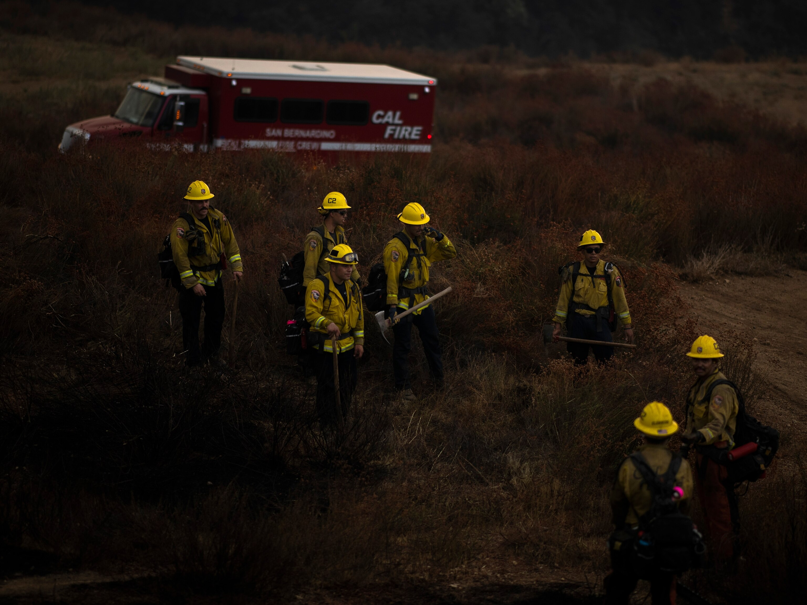

I am a husband, a father, and an active-duty Army Officer. For over a decade, I have led Americans from every background - managing teams, resources, and high-stakes decisions where accountability was not optional.
Washington does not need louder rhetoric. It needs disciplined leadership that understands consequences, execution, and long-term Responsibility.

This campaign is about restoring power to the people who actually earn this country’s success.
We will demand transparency in federal spending, enforce oversight on corporate influence, and ensure working families are not priced out of the communities they build.